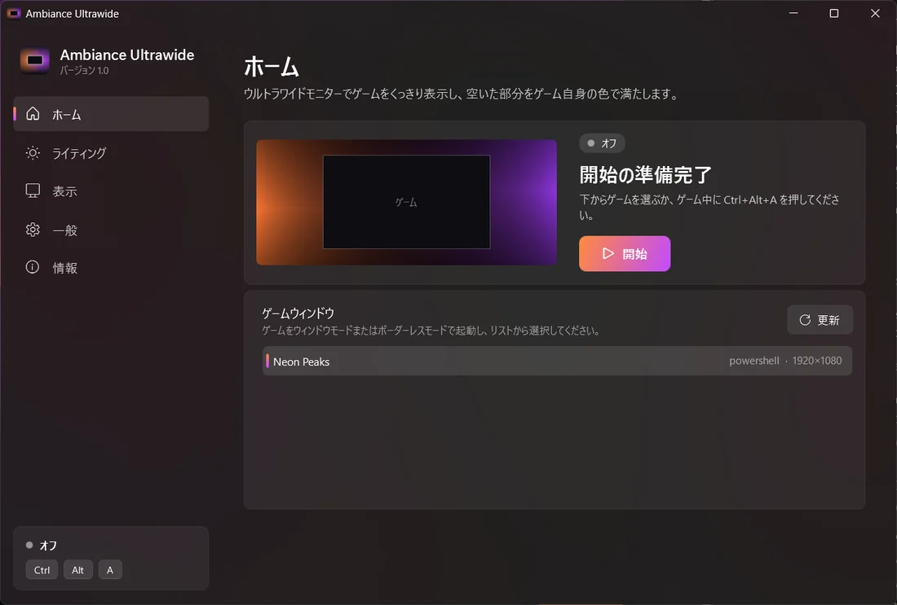
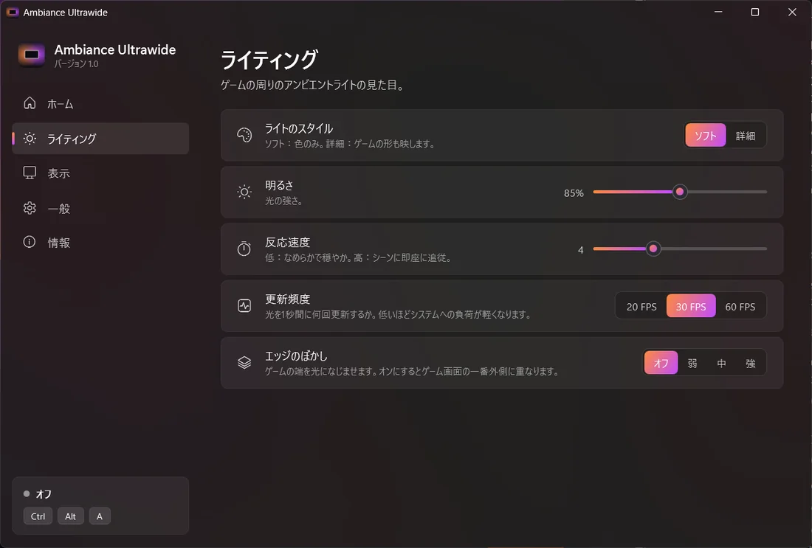

Ambiance Ultrawide
ゲームと同期するアンビエントライト。
ウルトラワイドモニター向け、ゲームと同期するアンビエントライト。ゲームの周りの黒帯を、テレビのアンビエントライトのようなやわらかな光で満たします。ゲームはピクセル等倍でくっきり、FPS への影響もありません。
無料 · オープンソース · Windows 10/11 · 12 言語

ゲームはくっきりそのまま、空いた部分はゲームの光で輝く
ぼやけた低解像度とはお別れ
左：Windows の解像度を下げた状態。 右：Ambiance Ultrawide。


FPS を落とさず画面いっぱいに
ゲームは同じピクセル数で描画し、Windows が大きく表示

ソフトな光、または詳細な光
穏やかな色の光、またはゲームの形を映す光

ゲームを選んで「開始」
またはゲーム中に Ctrl+Alt+A

光を好みに合わせて調整
スタイル、明るさ、反応速度、更新頻度

機能
GPU キャプチャで CPU 約 1%。ゲームのメモリには触れません。
- ゲームのシーンと同期するアンビエントライト
- 解像度を下げたときのぼやけがない鮮明な画面
- ウィンドウ枠を外し、サイズを調整して中央に配置
- FPS を落とさずに画面いっぱいに拡大
- GPU キャプチャで CPU 使用率は約 1%
- ソフトと詳細の 2 つのライトスタイル
- 明るさ・反応速度・更新頻度を調整可能
- ゲームのメモリに触れず、データも収集しない
概要
ウルトラワイドモニターの黒帯を、ゲームと同期するアンビエントライトに変えましょう。
21:9 や 32:9 のモニターで 16:9 のゲームをプレイすると、左右が黒いまま残ります。Ambiance Ultrawide はその部分を、ゲームのシーンと同期して変化するやわらかな光で満たします。最新のテレビのアンビエントライトのように、爆発や夕焼け、ネオンの光がゲームの外側まであふれ出し、画面全体がゲームの一部になります。
ライトスタイルは 2 種類：ソフト（落ち着いた色の光）と詳細（ゲーム内の形を追従）。明るさ・反応速度・更新頻度を調整できます。
ぼやけず、くっきり：Windows の解像度を下げると画面全体がぼやけてしまいます。Ambiance Ultrawide はゲームをボーダーレスウィンドウでピクセル等倍のまま中央に表示します。必要に応じて Windows の拡大鏡で画面いっぱいまで拡大でき、FPS は落ちません。
システムに軽い：グラフィックカードで画面をキャプチャし、CPU 使用率は約 1%。ゲームのメモリやファイルには一切触れず、画面に表示されている映像だけを読み取ります。データの収集やネットワーク接続も行いません。
使い方：ゲームをウィンドウモードまたはボーダーレスモードで起動し、Ambiance Ultrawide で選んで「開始」を押します。ゲーム中に Ctrl+Alt+A を押しても開始できます。Ctrl+Alt+Z で拡大を切り替えます。
無料のオープンソース。12 言語に対応。